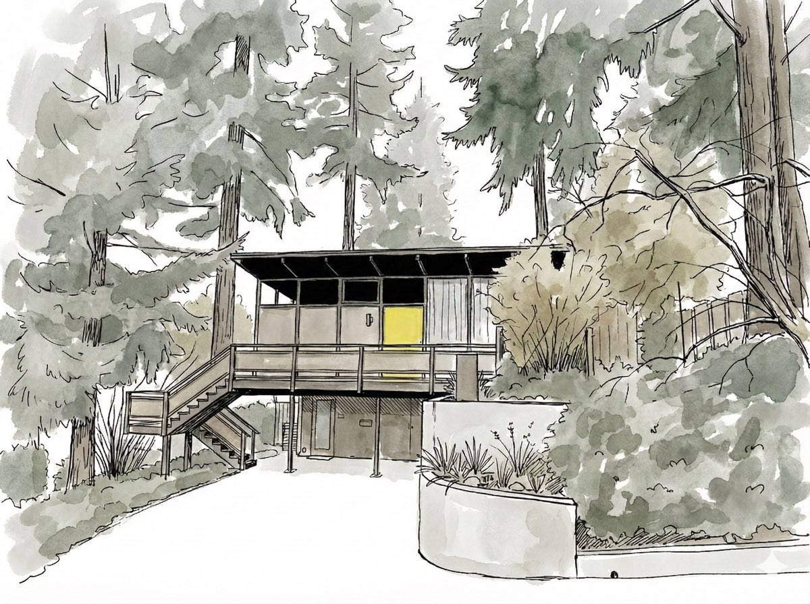
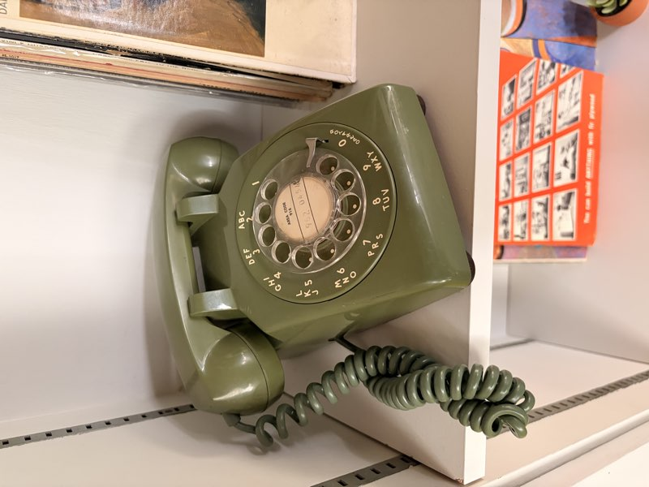
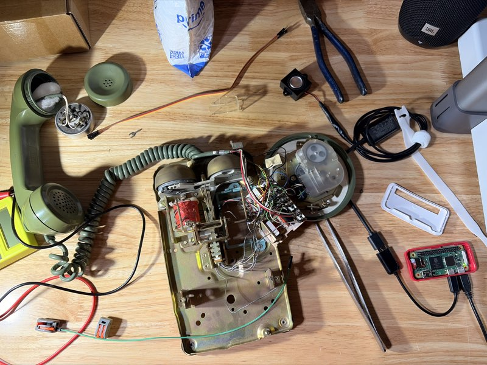

Pick Up the Past
"Voices Across Time"
I turned a vintage rotary phone into a storytelling device. No apps. No screens. Just pick up and listen.
The Experience
Simple. Familiar. Magical.
You pick up the phone and the story begins. No buttons, no menus, no instructions needed. The familiar ritual of answering a call becomes a portal to another time.
Ideas
Where Could This Live?
Vacation rentals and historic properties could share the stories of those who lived there.
Imagine intimate, personal moments in public spaces. One visitor, one story.
Give an heirloom a new purpose: sharing the stories behind it.
Escape rooms, theater, installations. An unexpected analog touchpoint.

Case Study
The first licensed female architect in Washington State after WWII designed this mid-century modern home as her first residence and office.
Now a vacation rental, the house welcomes guests who can pick up the vintage rotary phone and hear Mary's story — 8 chapters, 12 minutes of history. I built this as the first HelloHistory installation.
"The goal was simple: no buttons, no screens, no instructions. Just pick up and listen."
Sample: Welcome to Del Monte


Hardware
A Raspberry Pi Zero, a USB audio adapter, and the original hook switch. No soldering required. Under $50 in parts. The phone does the rest.
The tiny computer that runs everything. WiFi built in, GPIO for the hook switch.
Sends crystal-clear audio through the original earpiece speaker.
The phone knows when it's picked up. Just wire in the Pi with lever nuts.
Simple, reliable software that starts on boot and just works.
Open Source
Want to build one?
I've open-sourced everything — hardware specs, software, deployment scripts, and step-by-step guides.